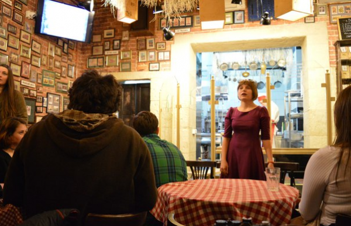
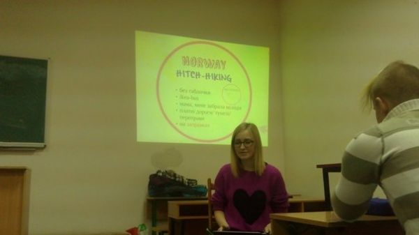
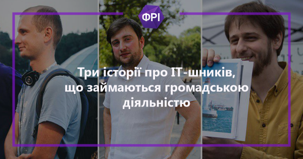
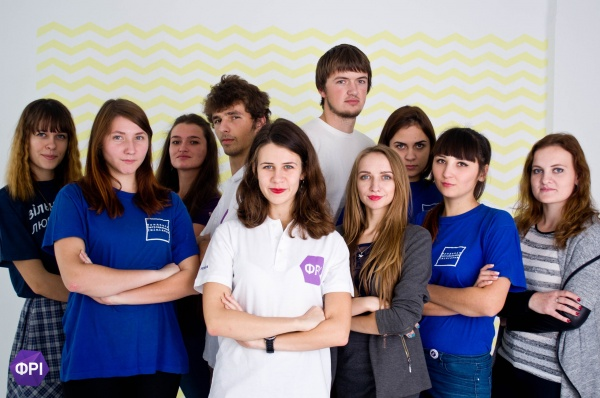

Проекти
Події
Новини всеукраїнсьої ФРІ
Долучитись до нас
Літературний Ровер
Ще одним пріоритетним напрямком роботи є розвиток молодих талантів та неформальна освіта. Це організація та проведення літературних, музичних, мистецьких вечорів, конкурсів серед молоді, тренінги, нестандартні школи та навчання,
спортивні та розважальні заходи. Цікавим є проект «Віршована зачитка», який тепер перейменований на «Літературний Ровер». Цей проект, створений для становлення молодих поетів і письменників. development center , в якому брали
участь представники 12 країн.
Дізнатись детальніше

ПоДорожники
З жовтня 2014 року Організація розпочала тренінги по бюджетних мандрах, які об’єднані масштабним проектом «ПоДорожники», в якому залучено вже більше 500 людей. Всі охочі можуть дізнатись як дешево подорожувати світом та що особливого
у кожній з країн. На постійній основі діє медичний проект «Що робити?», який вчить надавати першу медичну допомогу у різних ситуаціях. В 2015 році ФРІ у всіх містах долучилась до Всеукраїнської акції донорства «Допомогти може
кожен». У 2012р. дана громадська організація виступила активним партнером у всеукраїнському проекті «Зробимо Україну чистою!», метою якого було виховання екологічної етики у молоді та жителів міста Львова та досі продовжує
над ним працювати Щороку організація виступає партнером міжнародних освітніх проектів. У листопаді 2014 р. Львівська ФРІ виступила партнером у міжнародному обміні «Unseen All Ukraine», який організовувався за сприянна Erasmus+
спільно з Литовською організацією European democracy Також Організація тісно співпрацює з Міською та Обласною Радою. У 2008р. ФРІ виграла конкурс соціально-культурних проектів. Нашими постійними бенефіціарами виступають регіональні
підприємства та фірми. Долучитись до ФРІ може кожен охочий, будучи активним та вмотивованим. А першим кроком до змін може стати саме вона. Чекаємо на тебе ;) Слідкуй за нашими новинами, історіями та проектами.
Дізнатись детальніше

Видатні ФРІшники в IT галузі
Анна Соха, заступниця Голови ФРІ, екс-Голова Освітньої та Медіа служб ФРІ пише для IT-порталу DOU. У своєму матеріалі вона розказала про інших ФРІшників — Сергія Воловика та Євгена Демченка, громадська діяльність яких привела у
світ IT.
Дізнатись детальніше

Наші контакти
Голова осередку – Оксана Кунанець, +380 63 808 0999, vmgo.fri.lviv@gmail.com Секретар осередку – Сахно Юлія, +380 67 498 5573, sahnojulia687@gmail.com
Дізнатись детальніше

Встигни потрапити до нас на подію
До початку події залишилось
00
:
00
:
00
Розрахуйте вартість відвідин нашого табору
Кількість людей
Кількість днів
Виберіть табір
Загальна сума
000
000

Ми з вами зв'яжемось